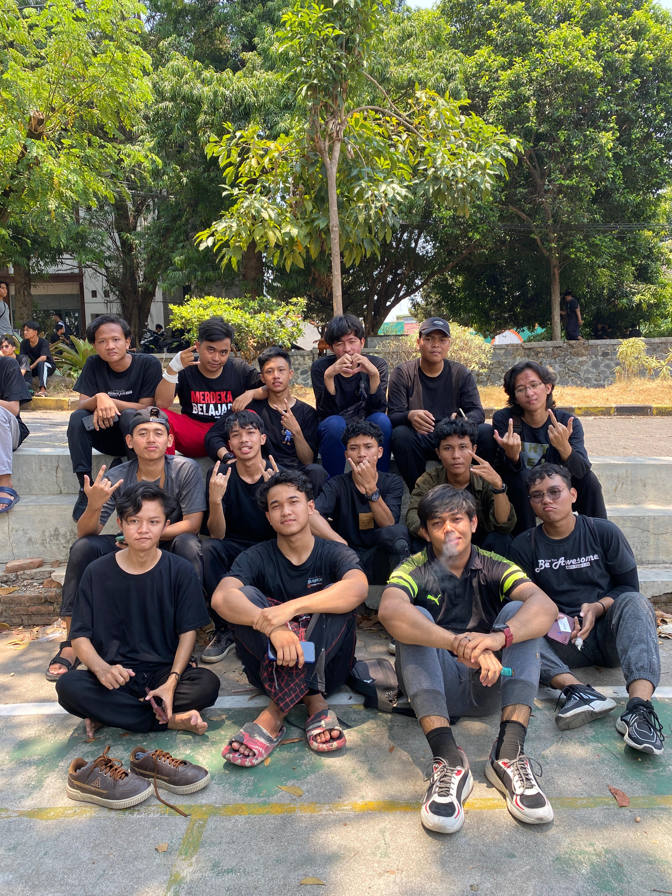
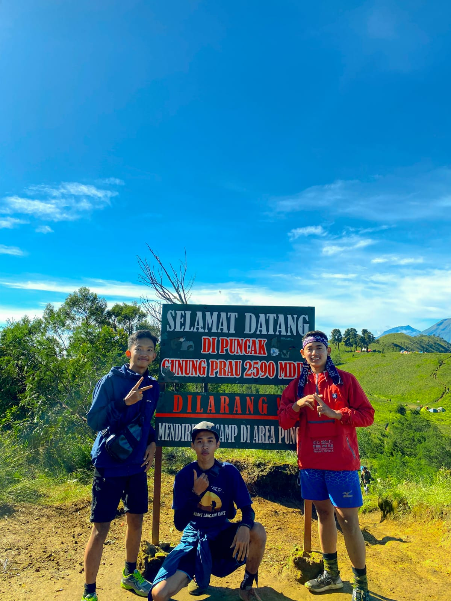

My Library




I'm a web developer who loves to create beautiful and functional websites for people who want to make a difference in the world.
Currently I'm a student of The Jump Digital School, where I'm learning how to create beautiful and functional websites using HTML, CSS, JavaScript, and WordPress.
Download CVThis website is my personal blog where I write about web development topics that interest me and inspire me.
Thank you for visiting my web portfolio and getting to know me better. I hope you enjoyed reading my blog posts and found them useful and informative. If you want to read more of my posts, subscribe to my newsletter where I send weekly updates on web development trends and tips. If you have any feedback or suggestions, please let me know. I'd love to hear from you.
Read MoreWeb development is the process of building and maintaining websites or web applications. It involves designing the visual layout (web design), creating using languages like HTML, CSS, and JavaScript.
Read MorePassionate adventurer with an insatiable curiosity for the uncharted. Embracing challenges, I seek hidden treasures, reveling in the exhilaration of each journey in unexplored realms, fueled by the excitement of discovery.
Read MoreI am someone who wants to pursue a bachelor's degree at Walisongo State Islamic University Semarang, majoring in Information Technology within the Faculty of Science and Technology.
Read More